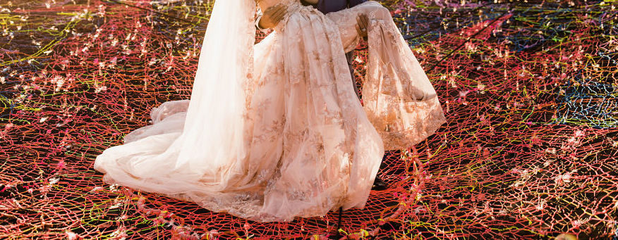
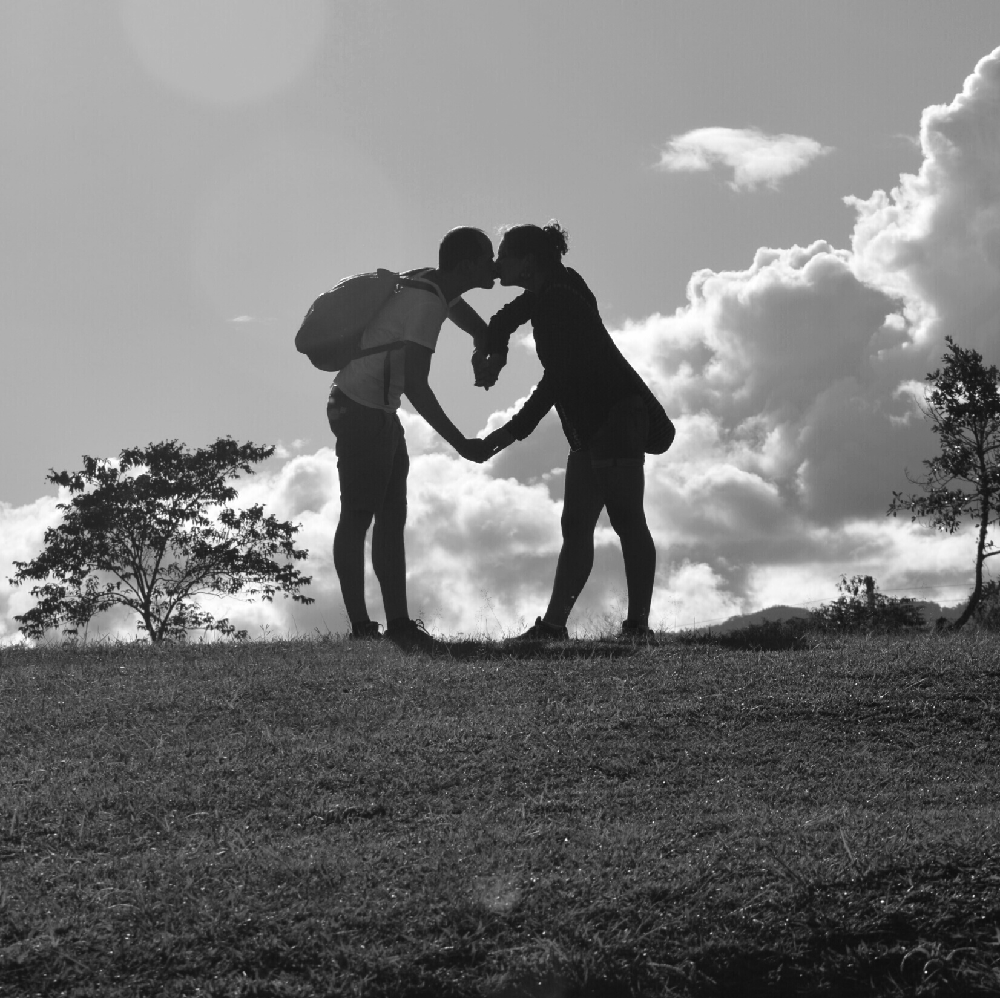
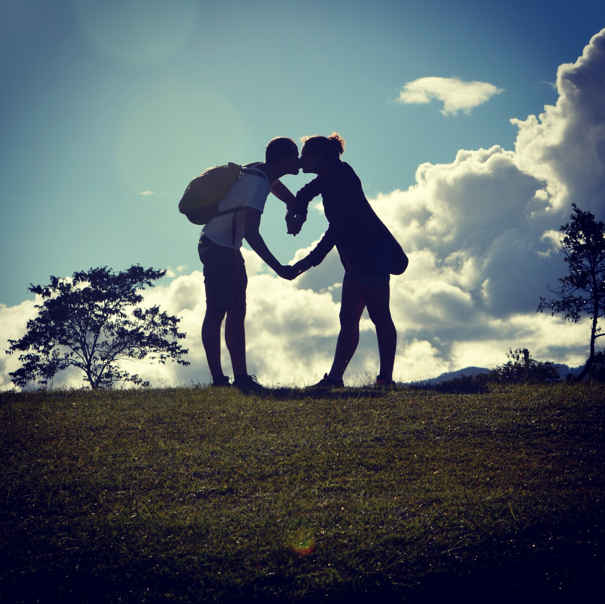
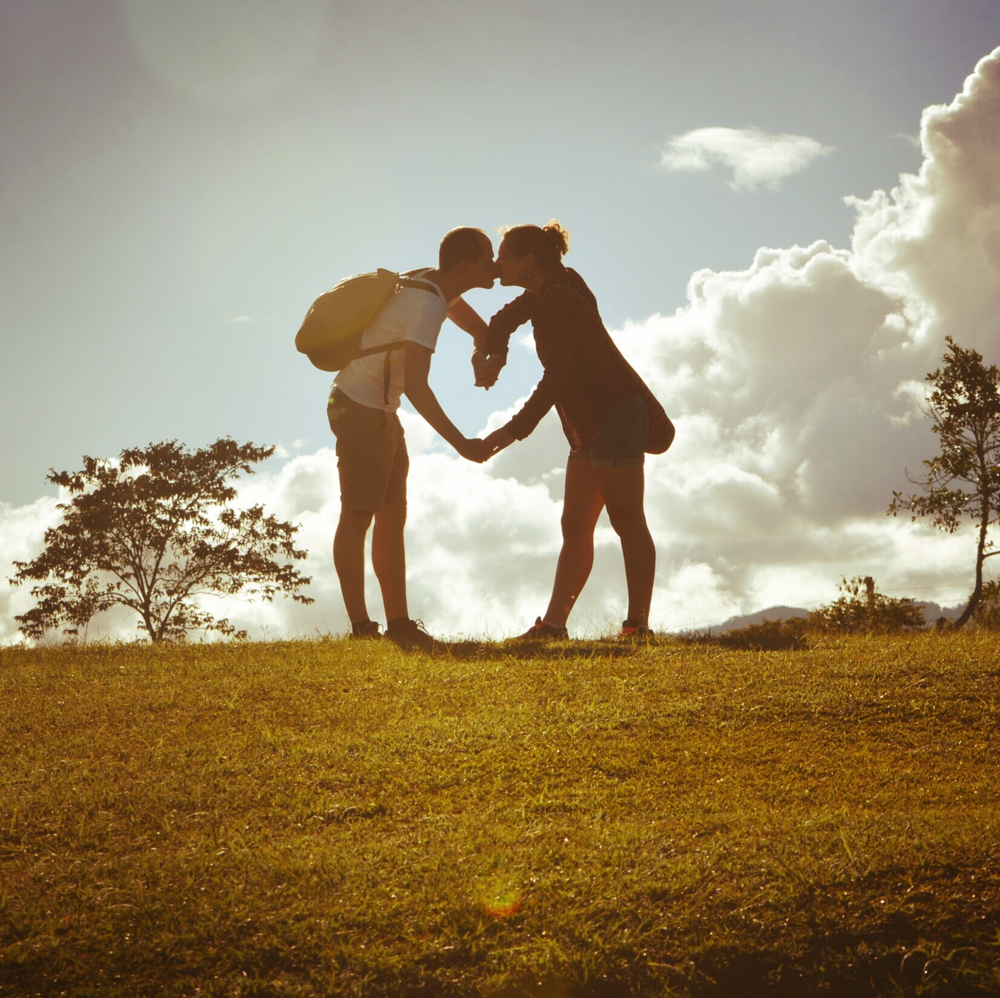

Herzlich Willkommen auf der Homepage unserer Hochzeit!
Hier findet ihr alle Informationen, die helfen sollen, dass eure Teilnahme an unserem großen Tag so angenehm wie möglich ist.
Hier erfahrt ihr alles rund um die Themen Anreise, Schlafen, Ablauf und noch vieles mehr.
Falls immer noch nicht alle Fragen geklärt sein sollten, zögert nicht uns anzusprechen.
Wir freuen uns auf Euch!
Liebe Grüße,
Magdalena & Tobias
Der einfachste Anreiseweg ist mit dem Auto. Einfach den Namen des Ziels in das Navi eingeben und die Fahrt kann losgehen. Es besteht ebenso die Möglichkeit mit dem Flugzeug und/oder der Bahn anzukommen.
Die nahegelegensten Flughäfen sind in Warschau und Danzig. Von dort ist es am einfachsten einen Direktzug nach Działdowo zu nehmen. In Działdowo können wir gern eine Abholmöglichkeit vom Bahnhof organisieren.
Wir haben bereits Zimmer von Freitag bis Montag vorgebucht, die ihr natürlich nutzen könnt und preislich im Rahmen liegen. Bitte sagt uns Bescheid, falls ihr diese Möglichkeit nutzen möchtet.
Eure Aufgabe wird es sein, die Feier so gut wie möglich auszukosten. Um den Rest kümmern wir uns.
Sicherlich wird es das eine oder andere geben, was ihr noch nicht kennt. Lasst euch einfach überraschen und macht bei allem mit.
Nutze den Tag!
Üblicherweise kleidet man sich festlich. Weiß ist für die Braut reserviert.
Es wird eine Musikgruppe geben, die mit Musik und kleinen Spielen durch den Abend führen wird. Wer etwas zur Unterhaltung beitragen möchte, kann das natürlich gern tun. Sagt uns bitte Bescheid, wenn ihr etwas plant. Die Musik versuchen wir so zu gestalten, dass für jeden etwas dabei ist.
Es wird einen professionellen Fotographen geben, der sowohl die Trauung als auch die Feier bis spät in die Nacht begleitet. Wer selbst gern Fotos machen möchte, kann dies natürlich tun.
Wir werden eine breite Auswahl an Getränken zur Verfügung stellen. Dabei ist es üblich, dass die Getränke auf dem Tisch stehen und sich jeder selbst bedient. Für genug Nachschub wird gesorgt sein.
Der Eröffnungstanz findet gleich zu Beginn der Feier statt, bevor alle sich auf ihren Plätzen einfinden.
Die Gäste sind bunt gemischt und kommen aus vielen Ländern. Habt keine Scheu vor sprachlichen Barrieren – spätestens nach einigen Anstoßrunden sollte dies kein Problem mehr darstellen.
Das heißt so viel wie „noch einmal, noch einmal”. Das rufen die Gäste im Chor bei dem Lied „Sto lat“, welches sicherlich nicht nur einmal im Laufe des Abends erklingen wird.
Die kirchliche Trauung findet in Kuczbork statt (etwa 30 Minuten von Działdowo). Ihr werdet wahrscheinlich nicht alles verstehen, aber die entscheidenden Momente werdet ihr bestimmt erkennen
Wir hoffen, dass ihr diese beiden Dinge mitbringt und wir einen unvergesslichen Tag mit euch haben.
Wird es viele geben. Es wird sechs Gänge geben, die im Laufe des Abends und auch noch spätnachts serviert werden. Hungern sollte also niemand. Damit ihr auch wisst, was ihr dort esst, wird ein Menü auf Deutsch auf dem Tisch liegen.
Das heißt „Ich verstehe nicht“. Kommunizieren kann man aber auch mit Händen und Füßen. Tipp: Deutsche Sätze noch einmal langsam und laut zu wiederholen hilft dem Gegenüber leider nur selten beim Verstehen
Es wird kein offizielles Ende geben. Die Feier ist erst zu Ende, wenn der letzte geht.
Sollte man (vor allem beim Trinken) einplanen. Die Nacht wird sehr lang sein, sodass einige Gläser Wasser zwischendurch für ein besseres Durchhaltevermögen sorgen.
  Wir sind sicher, dass wir für alle einen Schlafplatz organisieren können, sodass ihr euch darüber nicht allzu viele Sorgen machen braucht.
Die meisten von euch werden in der Nähe der Feier ihren Schlafplatz haben. Wir werden uns darum kümmern, dass ihr gesund und sicher dorthin kommt.
Wird es zumindest am Anfang geben und ist durch kleine Kärtchen sichtbar. Wir würden uns aber freuen, wenn sich alles im Laufe des Abends ein wenig durchmischt.
Wir haben jeweils drei weibliche und männliche Trauzeugen, die helfen können, falls ihr Fragen habt. Ihr könnt uns aber auch fragen.
Wir freuen uns über jede Überraschung.
Wir freuen uns jeden Tag mehr mit euch an diesem Tag feiern zu können.
Eine polnische Hochzeitstradition. Auf diesem Tisch wird es typische Spezialitäten wie selbstgemachte Wurst, eingelegte Gurken, Schmalz oder selbstgebrannten Schnaps geben. Greift zu, wenn ihr in der Nähe seid!
Falls ihr Fragen habet, zögert nicht, sie zu stellen.
Der 25.Buchstabe des deutschen und des polnischen Alphabets. Also wenn das kein Schicksal ist…
Eine durchschnittliche Hochzeitsfeier in Polen dauert zwölf Stunden…